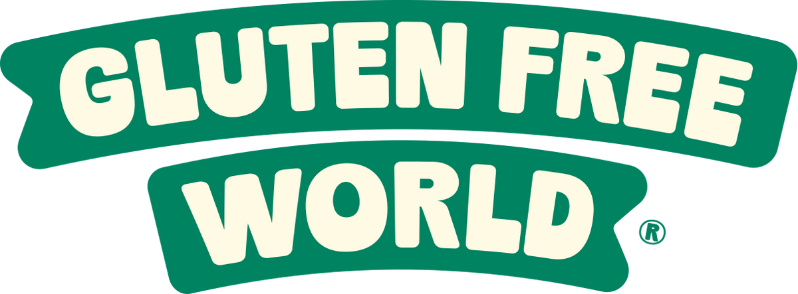

Not just gluten-free
👁 236📍 215
❤ 3💬 0
↪ 0🔖 0

July 2026 monthly report — Instagram, Facebook & LinkedIn results for the gluten-free content campaign, with June and the pre-campaign baseline shown for comparison.
Hi Paul — here's your July 2026 performance report for Gluten Free World's social channels, with last month (June) and the pre-campaign baseline shown alongside so you can see the trend clearly.
Month-on-month, engagement is mixed: Instagram interactions fell −60% on June and content views rose +28%, while your Facebook audience and post engagement grew again. Instagram reached 2,256 accounts in July, the highest month since the campaign began and 62% ahead of June. Against the pre-campaign baseline (April), it's night and day: reach up 70×, views 20× and interactions 5×.
We've also opened up LinkedIn as a B2B channel — distributor and foodservice thought-leadership posts building authority with trade buyers. It's early and deliberately niche, but the page is live and growing.
Instagram reach, monthly
@glutenfreeworld_au · 95 posts · following 1,463
Gluten Free World · organic page activity
Australian Gluten Free Blending · distributor & foodservice audience
A B2B play — thought-leadership posts & newsletters aimed at distributors and foodservice buyers. The goal here is authority, not volume. July impressions (236) vs June (697).
Ranked by impressions
Methodology: Organic (non-paid) Instagram, Facebook & LinkedIn data pulled live via Windsor.ai for 1 March to 31 July 2026 (LinkedIn from campaign launch). "Accounts reached" and "Content views" are the sum of daily account-level figures and may count repeat viewers across days. Follower counts are end-of-month figures. Windsor.ai only serves Instagram follower gains for the trailing 30 days, so July's Instagram total (852) is the live 10 August snapshot (861) less the 9 followers gained 1 to 9 August, and July's new-follower figure is that total less the 811 recorded on 1 July. Post thumbnails saved locally so the report stays intact over time.